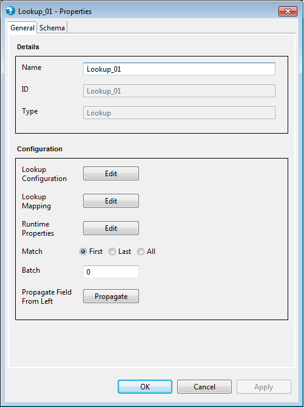
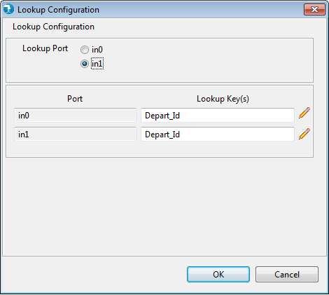
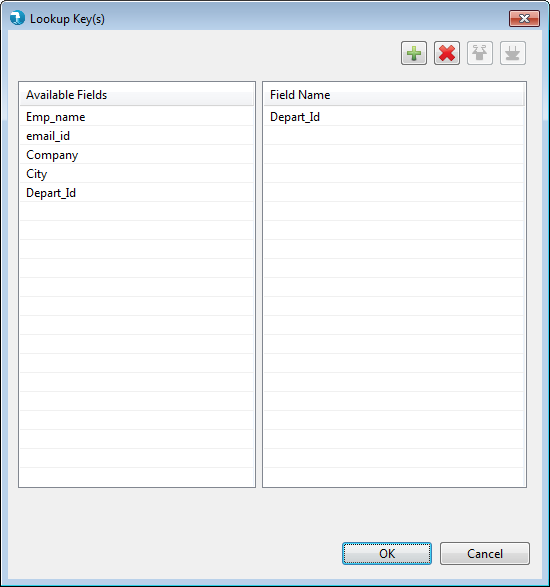
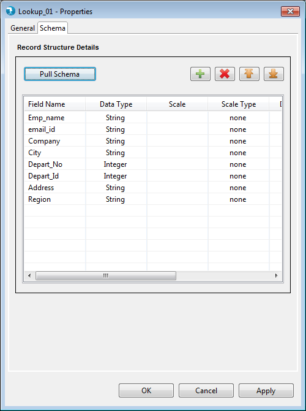
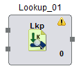

Properties for the Lookup component can be viewed by Double click->component on canvas. The properties contain a 'General' tab and a 'Schema' tab. Common and mandatory properties are present in the General tab. Schema displays option to accept the field schema i.e. field name, Data type, scale etc.

- Name - The identifier for the component. This is a mandatory property. This property is pre-populated with the component name, i.e. 'lookup' followed by an incremental number. It can be changed to any custom name. The name property has following restrictions:
- Must be specified and should not be blank.
- Must be unique across the job.
- Accepts only alphabets (a-z), numerals (0-9) and 4 special characters: "_", "-", ",", " " (space)<./span>
- ID - ID field will specify unique id for every component.
- Type - Type further categorizes the component to detailed operation that it intends to perform. Here it is of type Lookup.
- Lookup Configuration - Edit opens a grid that accepts Driver and Lookup keys for each input port. Radio buttons have been provided to specify driver and lookup ports. By default "IN1" is the Lookup port. User can change this as per the input port connected to the Lookup file


- Lookup Mapping - Edit option opens up the Lookup mapping view, where the user can select the input fields from each input needed for the Lookup output.

- Runtime Properties - Runtime properties are used to override the Hadoop configurations specific to this lookup component at run time. User is required to enter the Property Name and Property Value in the runtime properties grid.
Check How to pass Hadoop properties to component

- Match - User is provided with three radio buttons to select "First", "Last" or "All" matching output records after the Lookup is performed.
- Batch - Batch accepts an integer value and signifies the batch this component will execute in. The default value for batch is 0. Batch can have a maximum value of 99. Batch is a mandatory property.

Schema is mandatory for Lookup component. Schema tab defines the record format on the out port of the lookup component. A field in schema has multiple attributes as described below.
- Field Name - The name for the field. This is a mandatory attribute.
- Data type - The data type for the field. This is a mandatory attribute. The default data type is "String". Check supported data types page for list of supported data types.
- Scale - The number of digits to the right of decimal point. Scale is defined for Double, Float or BigDecimal field.
- Scale Type – Scale Type accepts values as implicit or explicit for BigDecimal field and none for other data types. Explicit considers the length of '.' in precision and implicit ignores length of '.' precision for the BigDecimal field.
- Date Format - The format for date data type. Refer to Date formats page for acceptable date formats.
- Precision – The number of significant digits (all digits except leading zeros and trailing zeros after decimal point).
- Field Description – The description for the field.
Pull Schema The schema defined in operation editor's output, will be pulled to the schema tab. The current schema in the grid will be overwritten with the schema from operation editor's output.
The lookup components applies validations to the mandatory fields as described above. Upon placing the lookup component on job canvas for the first time (from component palette), the component shows up a warning icon as mandatory properties are not provided.

The properties window also displays error icon on mandatory fields if it has an incorrect value. The error icon is displayed on the tab as well, if any of the field within the tab has some error.

If the properties window has some error even after user visit's it once, then the warning icon on the lookup component on the job canvas changes to error icon. This error icon is removed only when all the mandatory fields are supplied with correct values.